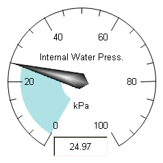

KineticaRT Studio Dial

Features
The Dial control
displays the value of a numeric channel.
It has the following features:
-
Display of the channels description or a custom
description
-
Display of the channels tooltip or a custom
tooltip
-
Display of the channels units.
- Display of the channels values using a needle.
- Display of the channels value using a digital display
- Optional Display of the channels value using circular fill.
Connection
The KineticaRT Studio Dial should be connected to channels containing values
of type KineticaRT.Values.Double.